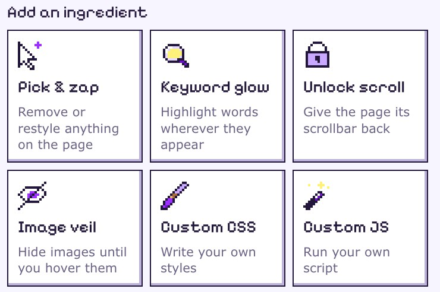

Ten things you won't believe about houseplants
Your fern has been keeping secrets. Number seven will change how you water forever, and number eight is about moss.
Your fern has been keeping secrets. Number seven will change how you water forever, and number eight is about moss.
Get our newsletter, seven times a day.
No thanks, I hate saving moneyHide what bugs you. Restyle what's ugly. Highlight what matters.
Chrome asks for this before any extension can change pages for you. On the page that opens, find Allow User Scripts and switch it on.
Click the puzzle piece next to the address bar, then the pin next to Web Potions.
On any site, click the potion in your toolbar and pick what bugs you.
Remove it, restyle it, or make words glow. You see the result right away.
Save it as a potion and it runs by itself every time you visit. Every potion has an on/off switch.
Or start with a ready-made one. Browse the potions

Use an AI that can drive your Chrome, like Claude in Chrome? Tell it what you want in plain words. It tries the change on the page, checks that it works, and saves it as a potion.
Set up AI modeFree. Open source. No account. No tracking of any kind.
Your potions stay in your browser. The one thing Web Potions fetches is its catalog, a plain file from GitHub, and nothing about you goes with it. If you use AI mode, what your AI reads goes wherever that AI sends it.